Caricatore robot Yumi
L’interfacciamento tra l’ambiente di controllo Skipper e il robot Yumi viene fornito come plugin di estensione di Skipper. Il plugin arricchisce il programma di due funzionalità:
Dal pannello HMI si ha accesso all’archivio delle ricette e a strumenti rapidi per il controllo del ciclo robot: l’avvio, l’arresto e la ripartenza. È inoltre visualizzato il log di sistema di Yumi per avere un rapido riscontro di eventuali segnalazioni. La comunicazione tra Skipper e robot viene effettuata attraverso la sua interfaccia Robot Web Services 2.0 API, pertanto è necessario predisporre una connessione ethernet tra il PC e la rete pubblica del controller.
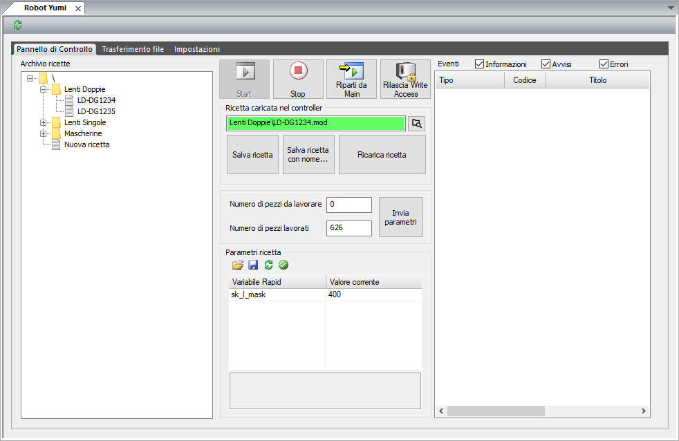
Il programma robot è organizzato in due parti, una statica e una dinamica.
La parte statica è permanentemente caricata in RAPID e definisce l’insieme di tutte le funzionalità disponibili del robot: tutte le sequenze di prelievo e deposito implementabili, procedure di homing, ecc. Il ciclo robot è definito dalla scelta delle sequenze da richiamare sulla base del valore di variabili e parametri, tramite le quali è possibile configurare il tipo di lente o mascherina da caricare. A loro volta le varie sequenze sono funzione di punti e offset configurabili, in modo da essere adattabili alle diverse esigenze. La parte statica del programma è quindi realizzata per essere indipendente dall’hardware del robot e pertanto può essere mantenuta uguale.
La parte dinamica, che costituisce la ricetta vera e propria, è il modulo RECIPE. In esso sono definite tutte le variabili, i robtargets e gli offset che consentono di personalizzare e specificare il flusso del programma statico. Tutte le possibili variazioni di modello, di prelievo, deposito e caricamento devono essere realizzabili tramite l’opportuna modifica delle variabili definite nel modulo RECIPE.
L’insieme dei salvataggi su file .mod delle varie implementazioni del modulo RECIPE, costituisce l’archivio delle ricette. Ciascuna ricetta, quindi, altro non è che UN file .mod che definisce una particolare istanza del modulo RECIPE.
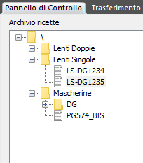
Nelle impostazioni del pannello Robot Yumi, in Skipper, viene definita la posizione della cartella dell’archivio ricette, che può trovarsi sul PC o su unità di rete condivisa. La posizione di default dell’archivio ricette è la sottocartella YumiRecipes del percorso di installazione di Skipper. A partire da questa posizione il programma effettua una ricerca di file .mod e sottocartelle creando un albero di ricette navigabile e modificabile direttamente da programma. L’archivio ricette organizzato a file consente una rapida copia da un PC all’altro, la creazione, cancellazione, cambio di nome dei file mod e delle cartelle si ripercuote immediatamente in una variazione della struttura dell’archivio, senza necessità di operazioni ulteriori da parte dell’operatore. Un secondo archivio, di default ricercato nella sottocartella YumiTemplates, definisce i modelli base da utilizzare per la creazione di nuove ricette. Facendo click sul pulsante di aggiornamento, visibile nella parte alta del pannello, viene effettuata una procedura globale di aggiornamento dello stato: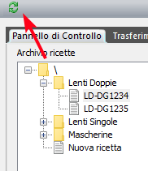
La creazione di una nuova ricetta può essere effettuata in tre modi:
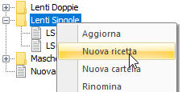
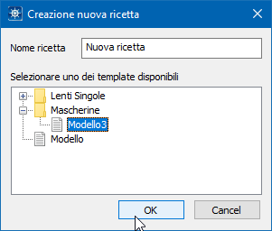
La modifica di una ricetta può essere effettuata tramite gli strumenti messi a disposizione da ABB, Flex Pendant o Robot Studio. Come indicato nel primo paragrafo, l’unico modulo modificabile per la differenziazione di una ricetta è il modulo RECIPE! Pertanto, per effettuare modifiche, è necessario innanzi tutto caricare la ricetta di interesse nel controller. Per rendere permanenti le modifiche effettuate si possono utilizzare i pulsanti Salva ricetta e Salva ricetta con nome…: il primo effettua il download dal robot della ricetta corrente e la sua sovrascrittura nell’archivio; il secondo crea invece una nuova ricetta a partire dalle modifiche effettuate. La ricetta originale risulterà invariata.
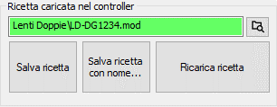
Per cancellare una ricetta si può fare utilizzare l’apposita funzione del menu visualizzato facendo click con il tasto destro, oppure cancellare direttamente il file dalla cartella dell’archivio
Le ricette possono essere caricate nel controller del robot in più modi:
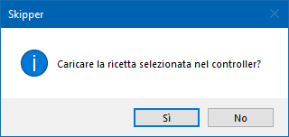
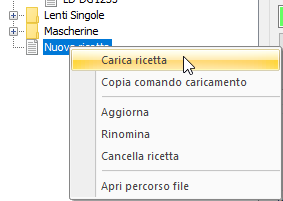
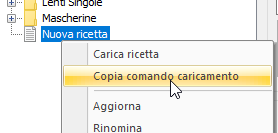
quindi incollando il testo in un blocco iso posto in cima alla lista percorsi
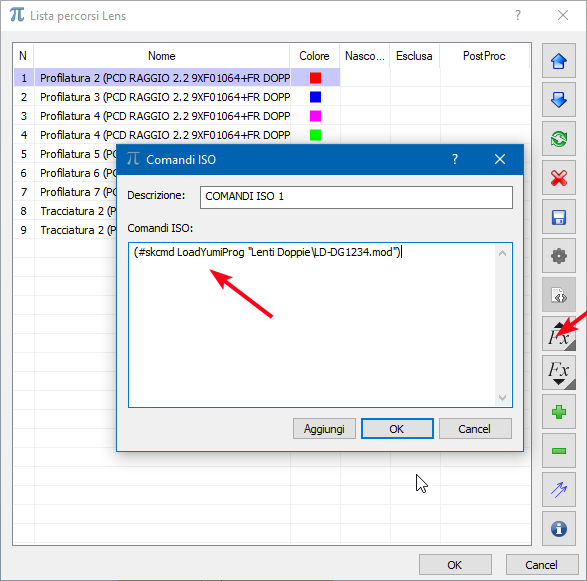
Il comando di caricamento viene interpretato in fase di invio diretto o caricamento del file cnc.
Per consentire il settaggio fine di alcune impostazioni, o contemplare una naturale variabilità delle lenti, è stato predisposto un meccanismo per presentare in Skipper alcune variabili di interesse della ricetta. Tutte le variabili presenti nel modulo RECIPE che iniziano con il prefisso sk_ vengono visualizzate e sono modificabili nel pannello Parametri della ricetta. Modificando il valore di una variabile questa cambia di colore rispettando la convenzione utilizzata in Skipper per tutti i parametri
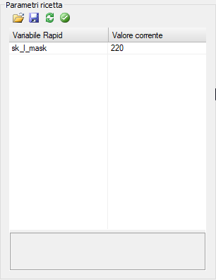
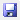
per salvare il valore modifica in maniera permanente: viene modificato il valore iniziale della variabile e, se confermato nel messaggio di richiesta, salvata la ricetta in archivio.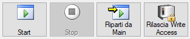
Consente di avviare, fermare, riavviare il ciclo robot. Tramite il pulsante Rilascia Write Access Skipper effettua il rilascio, qualora l’abbia acquisito, del controllo in scrittura sul robot, consentendo la connessione ad altri software, come Robot Studio
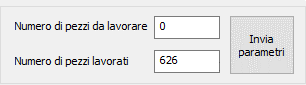
Il numero di pezzi da lavorare viene impostato come contatore cicli della macchina CN. Impostando il Numero di pezzi da lavorare a 0, la macchina effettuare un numero illimitato di cicli, fin quanto il robot sarà in grado di servirla. Valori diversi da 0 comportano un numero di cicli necessario a portare il contatore Numero di pezzi lavorati ad un valore maggiore o uguale a Numero di pezzi da lavorare. In qualsiasi momento è possibile modificare i valori dei contatori e inviarli alla macchina premendo il pulsante Invia parametri
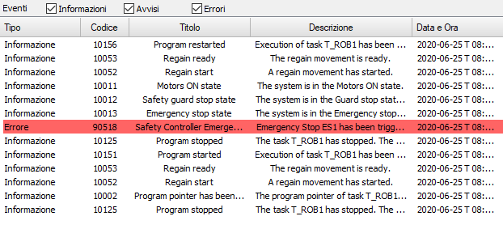
Riporta il registro degli eventi, accessibile anche da Flex Pendant
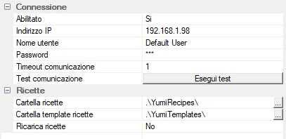
Da qui è possibile modificare i parametri di connessione al robot e la posizione dell’archivio ricette. Tutti i valori, a parte l’indirizzo IP per la connessione, sono già inizializzati ai valori di default.
Abilitato: abilita o disabilita l’interfaccia di comunicazione con Yumi. Può essere utilizzato per disabilitare temporaneamente la comunicazione con il robot in caso di guasto o non utilizzo, allo scopo di evitare la segnalazione di errori di comunicazione ad ogni avvio del programma
Indirizzo IP: indirizzo IP del controller del robot
Nome utente: nome utente da utilizzare per la connessione al robot. Il nome utente di default è Default User
Password: password da utilizzare per la connessione al robot. La password di default è robotics
Timeout comunicazione: tempo in secondi oltre il quale vengono interrotti i tentativi di comunicazione con il robot
Test comunicazione: effettua un test di comunicazione ritornando l’esito dell’operazione
Cartella ricette: percorso alla cartella nella quale vengono ricercate le ricette da visualizzare nell’archivio. Può essere un percorso assoluto o relativo alla cartella di installazione di Skipper. La posizione predefinita della cartella è .\YumiRecipes, posta all’interno della cartella di installazione di Skipper
Cartella template ricette: percorso alla cartella nella quale vengono ricercate le ricette da visualizzare nell’elenco dei template. Può essere un percorso assoluto o relativo alla cartella di installazione di Skipper. La posizione predefinita della cartella è .\YumiTemplates, posta all’interno della cartella di installazione di Skipper
Ricarica ricette: opzione che viene utilizzata durante il caricamento automatico delle ricette da file cnc. Qualora la ricetta da caricare sia già presente nel robot, specifica se questa debba essere ricaricata, con conseguente riavvio del ciclo, oppure no